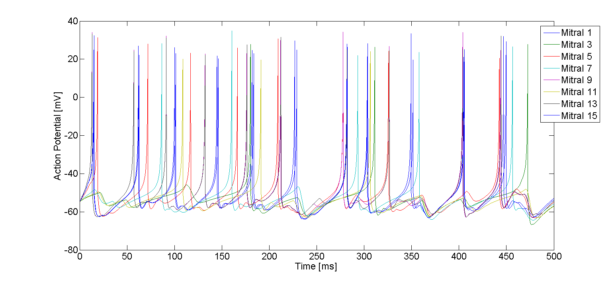

This is the readme for a version of the matlab code used to implement the model of the olfactory bulb developed in the paper: Polese D, Martinelli E, Marco S, Di Natale C, Gutierrez-Galvez A (2014) Understanding Odor Information Segregation in the Olfactory Bulb by Means of Mitral and Tufted Cells. PLoS ONE 9(10): e109716. doi:10.1371/journal.pone.0109716 Please cite this paper if you publish any research results obtained with this code or any modified versions of this code. This simple model of olfactory bulb model is composed of 4 neuron types: Mitral Cell, Tufted Cell, PeriGlomerular Cell and Short Axon Cell. The different neurons are obtained changing the object properties of the NeuronIzh matlab class (NeuronIzh.m). The neurons are connected to build a glomerulus using the methods of the class glomerulus (glomerulus.m). The file test.m can be used to try the software and obtain the results behind the example.png which is representative of the paper figure 2C:  Graph simply after running the model with commands like plot(0.1*[1:5000], Out_M1v(1:2:end,:)'); If you are impatient instead of running the model (takes 10 minutes or so) you can just type on the command line load Results.mat and then run the above graphing command. %% For any questions or suggestions please contact us. Davide Polese %% (davide.polese@artov.imm.cnr.it), Eugenio Martinelli, Santiago %% Marco, Corrado Di Natale, Agustin Gutierrez-Galvez %% (agustin.guti@gmail.com)